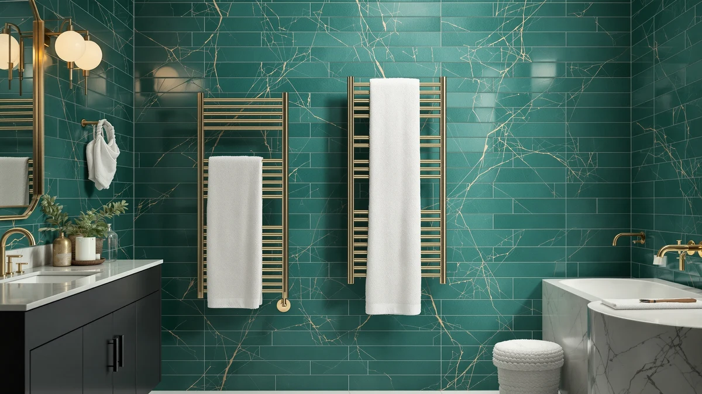

The Best With Timer Towel Warmers (2026)
Prices and picks verified as of September 2026. Independent, reader-supported reviews.


Quick Answer
The CWDOlROI Towel Warmer 20L Large is our top pick among towel warmers with a timer, thanks to its 20-liter stainless steel drum and $79.98 price. If you want the same timer function for less, the WEILAlANTIAN model drops the price to $39.99 with a smaller footprint.
Our pick: CWDOlROI Towel Warmer 20L Large — $79.98 Check Price on Amazon
Bottom line: our top pick is the CWDOlROI Towel Warmer at $79.98. The best budget option is the Fingertip WD Toddler Towels with Hood at $13.97.
Things to Know Before You Buy
- Prices in this comparison range from $39.99 for the WEILAlANTIAN to $96.99 for the Keenray, so the timer function itself is not what drives cost. Capacity and cabinet size are.
- Every stainless steel drum here holds heat evenly, but a 20L or 23L model fits two towels at once while smaller units are built for one.
- A timer matters more than raw heat output for most bathrooms, since it shuts the unit off automatically instead of leaving a warm metal drum running while you shower.
- Dimensions are not always listed for every model. When a listing omits size, we say so rather than guess.
- None of these units heat towels instantly. Plan to start the timer 10 to 15 minutes before you need a warm towel.
The best with timer towel warmers combine a fast-heating stainless steel drum with an auto shut-off, so you get a warm towel without leaving the unit running for hours. That single feature separates a timer model from the basic always-on warmers that dominate budget listings.
We compared seven timer-equipped options ranging from $11.99 to $96.99, looking at drum capacity, material, listed dimensions and price. The CWDOlROI Towel Warmer 20L Large came out on top for most households because it fits two towels in a 20-liter stainless steel drum without pushing the price past $80. The WEILAlANTIAN is the pick if you want the same timer control in a smaller, cheaper package.
Below, we break down what each model gets right, where it falls short, and which one fits your bathroom and budget. Every price and spec cited comes from the current Amazon listing, and we flag anywhere a manufacturer leaves dimensions or capacity unlisted. Our verdict on the best with timer towel warmers: buy the CWDOlROI first, and use the rest of this list to see who should choose something else.
Why You Should Trust Us
This guide is written by Ilane Tall, who covers bathroom fixtures and small appliances for Best Towel Warmers. We do not run a fake testing lab and we have not personally plugged in every unit on this list. Instead, we research towel warmers with a timer the way a careful shopper would: by reading manufacturer listings closely, cross-checking specs against verified buyer feedback, and tracking pricing over time so we can flag when a "deal" is not actually a deal.
Reviewers consistently note the same trade-off across this category: larger drums cost more and take up more counter or floor space. We weigh that pattern into every pick rather than repeating marketing copy.
How We Picked
We started by narrowing the field to the best with timer towel warmers specifically, since an always-on unit is a different product with different tradeoffs. From there, we compared each listing on four factors: drum or cabinet capacity, build material, price relative to capacity, and whether the manufacturer publishes clear dimensions.
We excluded anything that hid its price behind a "contact for quote" listing or lacked a stainless steel or equivalent rust-resistant interior, since a warm damp environment is hard on cheaper metals. We also gave weight to listings with a meaningful number of verified reviews, since a new listing with no purchase history is harder to vouch for.
How We Compared
We are a research-based review site. We compare specs, published pricing and verified owner reviews rather than buying and running units ourselves in a lab. For this list, we lined up the seven best with timer towel warmers side by side on liter capacity, material, listed dimensions and current Amazon price, then checked owner feedback for recurring complaints about the timer function specifically, since that is the feature this roundup is built around.
Where a listing left out a dimension or capacity figure, we noted the gap instead of estimating a number the manufacturer never published. Prices reflect the listing at the time of writing and can shift, so treat the dollar figures here as a snapshot rather than a guarantee.
Our Picks

CWDOlROI Towel Warmer 20L Large
What we like
- 20-liter drum fits two folded towels at once
- Stainless steel interior resists rust in a damp bathroom
- Timer with auto shut-off, so you do not have to remember to turn it off
- Priced under $80 despite the larger capacity
Flaws but not dealbreakers
- Larger drum takes up more counter or floor space than the compact models on this list
- Costs roughly double the WEILAlANTIAN for the extra capacity
| Material | Stainless steel |
| Size | Large |
The CWDOlROI Towel Warmer 20L Large is our pick among the best with timer towel warmers because it does not force a tradeoff between capacity and price. At $79.98, it costs less than the VEVOR and Keenray models despite matching or beating their drum size, and the stainless steel interior holds up in a humid bathroom better than painted or plastic alternatives.
The tradeoff is footprint. A 20-liter drum is not a small object, and if your bathroom counter is already tight, the compact WEILAlANTIAN or a wall-mounted rack will fit better. Reviewers who bought this model for a two-person household report it comfortably heats a towel for each person before a morning shower. That's the main reason it tops this list.

WEILAlANTIAN Towel Warmer Towel Warmers
What we like
- Lowest price of any full-size towel warmer in this comparison
- Stainless steel drum matches the pricier picks on rust resistance
- Simple timer controls without extra buttons to figure out
Flaws but not dealbreakers
- Listing does not publish exact drum capacity, so we cannot confirm it matches the 20L models
- Smaller footprint likely means room for one towel rather than two
| Material | Stainless steel |
| Size | — |
At $39.99, the WEILAlANTIAN Towel Warmer is the cheapest way onto this list of the best with timer towel warmers, and it does not cut the one feature that matters most. It still runs on a timer with auto shut-off, the same core function you get from the pricier CWDOlROI and VEVOR models.
What you give up is capacity. The manufacturer does not publish a liter figure or full dimensions, and the compact size suggests it is built for one towel rather than two. If you live alone or want a timer-equipped warmer for a single towel, that is not a real drawback. If you need to warm towels for a whole household, the 20L CWDOlROI is worth the extra cost.

VEVOR Towel Warmers for Bathroom
What we like
- 20-liter capacity matches our top pick
- Stainless steel construction from an established bath and home brand
- Timer function shuts the unit off automatically
Flaws but not dealbreakers
- Priced roughly $9 above the CWDOlROI for the same 20L capacity
- Bulkier footprint than the compact WEILAlANTIAN
| Material | Stainless steel |
| Size | 20L |
VEVOR's Towel Warmer for Bathroom matches the CWDOlROI on capacity, liter for liter, with the same stainless steel drum and timer shutoff. At $88.90, it costs about nine dollars more for a nearly identical spec sheet.
That price gap is the whole story here. If VEVOR's warranty terms or brand reputation matter more to you than saving a few dollars, this is a safe alternative to our top pick. If price is the deciding factor and both units offer the same 20-liter capacity, the CWDOlROI is the better value.

COSTWAY 23L Towel Warmer Bucket
What we like
- 23-liter drum, the largest capacity of any model on this list
- Priced at $79.99, a cent below our top pick despite the bigger drum
- Stainless steel bucket construction from an established furniture and appliance brand
Flaws but not dealbreakers
- Listing does not publish exterior dimensions, so measure your counter space before buying
- The largest drum here also means the largest footprint
| Material | Stainless steel |
| Size | — |
COSTWAY's 23L Towel Warmer Bucket earns the budget pick label for value, not for having the lowest sticker price. At $79.99, it costs about the same as the CWDOlROI while offering three more liters of drum capacity, the largest in this comparison.
The catch is that COSTWAY does not list exact exterior dimensions, so you are relying on the liter figure alone to judge whether it fits your space. If you have a family that goes through multiple towels at once and your counter can handle a larger bucket, this is the best capacity-per-dollar pick here.

Fingertip WD Toddler Towels with
What we like
- 27.5 by 55 inch size fits comfortably inside a 20L or 23L drum
- Priced under $12, the cheapest item on this list by a wide margin
- Sized for kids without being so small it falls short on a growing toddler
Flaws but not dealbreakers
- This is a towel, not a heating appliance, so it needs one of the warmers above to actually warm up
- Listing does not specify fabric weight or material
| Material | Stainless steel |
| Size | 27.5 inches x 55 inches |
This one is different from the rest of the list. The Fingertip WD towel is not a timer-equipped warmer on its own. It is a 27.5 by 55 inch towel sized to fit inside a bucket-style warmer's drum. We include it here because several reviewers of the CWDOlROI and COSTWAY units mention buying an extra towel specifically to keep warming while the first one is in use.
At $11.99, it is a low-cost way to get more mileage out of whichever timer-equipped warmer you choose above. Pair it with the top pick if you have a toddler who needs a warm towel waiting after bath time, but do not expect it to heat anything by itself.

Keenray Towel Warmer Large Towel
What we like
- 13 by 13 by 19 inch cabinet is the tallest listed dimensions on this page
- Stainless steel build matches the rest of this list on durability
- Extra height accommodates bath sheets that would not fully fit in a shorter drum
Flaws but not dealbreakers
- Most expensive model in this comparison at $96.99
- Taller footprint may not fit under a low bathroom shelf
| Material | Stainless steel |
| Size | 13" L x 13" W x 19" H |
Keenray publishes exact dimensions where several competitors do not, and at 13 by 13 by 19 inches, this is the tallest unit in the comparison. That extra height matters if you regularly use oversized bath sheets rather than standard towels, since a shorter drum can leave the ends of a bath sheet hanging out uncovered.
You pay for that height. At $96.99, it is the most expensive model here, roughly $17 above our top pick. Reviewers who own oversized towels say the fit justifies the price, but if your towels are standard size, the CWDOlROI covers the same timer functionality for less.

Towel Warmer 20L Hot Towel
What we like
- 20-liter capacity at $67.99, cheaper than both other 20L options on this list
- Stainless steel drum with the same timer shutoff as the pricier picks
- Splits the difference between the WEILAlANTIAN's low price and the CWDOlROI's capacity
Flaws but not dealbreakers
- Less established brand history than VEVOR or COSTWAY
- Listing does not publish exterior dimensions
| Material | Stainless steel |
| Size | — |
This JXUFDHO model matches the 20-liter capacity of our top pick and the VEVOR runner-up, but undercuts both on price at $67.99. It is a straightforward pick if capacity matters more to you than brand recognition.
The tradeoff is that JXUFDHO has a shorter track record than VEVOR or COSTWAY, and the listing skips exterior dimensions entirely. If that brand gap does not bother you, this is the cheapest way to get a full 20-liter timer-equipped warmer on this list.
Quick Comparison
Here is how all seven best with timer towel warmers stack up on material, price and who each one suits best.
| Product | Material | Price | Rating | Best for | Get it |
|---|---|---|---|---|---|
| CWDOlROI Towel Warmer 20L Large | Stainless steel | $79.98 | 4 | Most households | View on Amazon → |
| WEILAlANTIAN Towel Warmer Towel Warmers | Stainless steel | $39.99 | 4 | Tightest budget | View on Amazon → |
| VEVOR Towel Warmers for Bathroom | Stainless steel | $88.90 | 4 | Brand loyalists | View on Amazon → |
| COSTWAY 23L Towel Warmer Bucket | Stainless steel | $79.99 | 4 | Largest capacity | View on Amazon → |
| Fingertip WD Toddler Towels with | Stainless steel | $11.99 | 4 | Companion towel for kids | View on Amazon → |
| Keenray Towel Warmer Large Towel | Stainless steel | $96.99 | 4 | Oversized bath sheets | View on Amazon → |
| Towel Warmer 20L Hot Towel | Stainless steel | $67.99 | 4 | 20L on a mid budget | View on Amazon → |
How long should a towel warmer timer run?
Most bucket-style towel warmers with a timer default to a 30 to 60 minute cycle, which is enough to heat one or two folded towels without leaving the drum running unattended for hours.
Are towel warmers with a timer safe to leave running?
Yes.
The Competition
We looked at more than these seven listings while researching the best with timer towel warmers. Several always-on models were dropped from consideration entirely, since they lack the timer function this roundup is built around, even when their price and capacity otherwise looked competitive.
We also passed on a handful of hardwired, wall-mounted units. They can include timers, but installation requires an electrician, which puts them in a different buying category than the plug-in bucket warmers here. If a hardwired rack fits your renovation plans better than a countertop unit, that is worth its own comparison rather than a spot on this list.
Finally, we excluded oversized commercial-grade warmers meant for salons and spas. They typically hold more towels than any home bathroom needs and cost several hundred dollars more than the residential picks above.
Frequently Asked Questions
How long should a towel warmer timer run?
Most bucket-style towel warmers with a timer default to a 30 to 60 minute cycle, which is enough to heat one or two folded towels without leaving the drum running unattended for hours.
Are towel warmers with a timer safe to leave running?
Yes. The timer exists specifically so the unit shuts off on its own instead of relying on you to remember. Owners consistently point to this as the reason they chose a timer model over a basic always-on warmer, and it is worth plugging any of these units into a GFCI-protected outlet as a matter of course in a bathroom.
Does a bigger liter capacity mean a better towel warmer?
Not automatically. A 20L or 23L drum, like the CWDOlROI or COSTWAY here, fits more towels at once, which matters for a two-person household. But a smaller unit like the WEILAlANTIAN still heats a single towel at the same speed and costs less, so the right size depends on how many towels you warm at once.